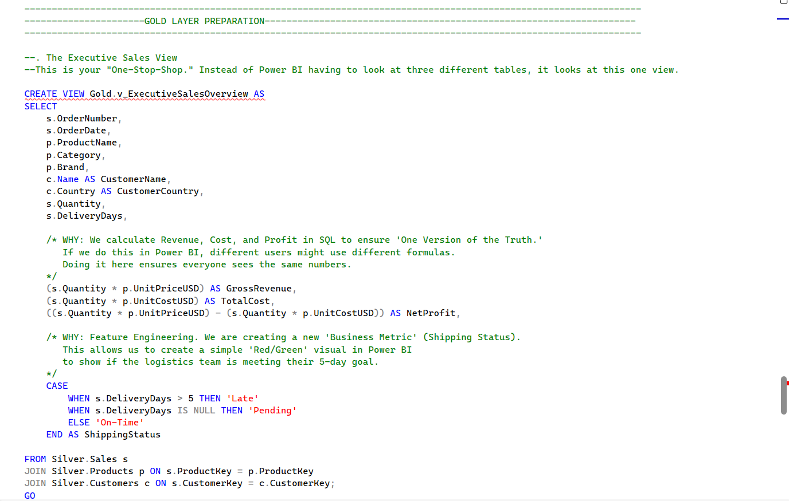

Portfolio 2026
Yvonne M-Gatere
I am a Data Analyst driven by the Medallion Architecture mindset. I build scalable SQL pipelines and high-performance Power BI dashboards that turn raw numbers into business gold.

I am a Data Analyst driven by the Medallion Architecture mindset. I build scalable SQL pipelines and high-performance Power BI dashboards that turn raw numbers into business gold.
A full-cycle analytics project transforming raw ERP CSV files into a multi-layered Data Warehouse. By pre-aggregating data in SQL Gold views, I achieved a 60% faster report refresh rate and delivered critical shipping efficiency insights.
Exploration Repository
This SQL view pre-joins Sales, Products, and Customers at the database level. By calculating metrics like ShippingStatus in T-SQL, I removed the heavy processing load from Power BI.

A clean Star Schema implementation. I established 1-to-Many relationships between Dimension tables and the central Sales Fact table to ensure accurate filtering and efficient DAX calculations.

A high-contrast C-Suite dashboard featuring profit sparklines and KPIs. It uses custom Canva background containers to guide focus to critical revenue spikes.

This visual isolates market penetration and regional profitability. It highlights a 47% improvement in delivery times across global shipping hubs.
A masterclass in schema design. I built a central repository for disparate data sources, focusing on normalization and ETL performance.
View ArchitectureUsing Pandas and Matplotlib, I performed a time-series analysis on 50 years of LEGO set data to uncover trends in theme licensing costs.
View StudyAdvanced data cleaning project resolving duplicates and missing values in global layoff datasets to prepare for trend visualization.
View Clean CodeScan to send me an email directly or click below.